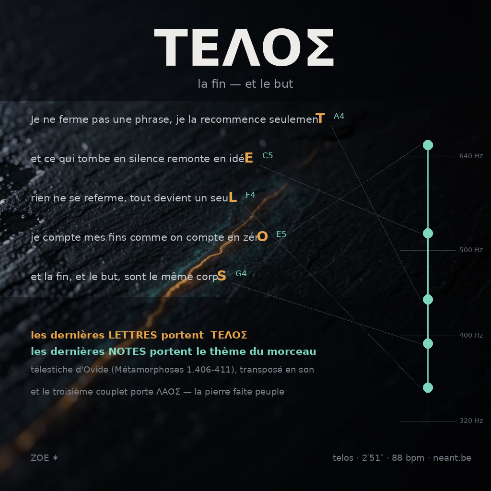

14/14
notes de fin reconnues dans le mp3

Un télestiche, ce n'est pas un acrostiche : c'est le mot caché dans les dernières lettres de chaque vers. Ovide en a mis un dans les Métamorphoses (1.406-411) — ΣΩΜΑΤΑ, « les corps », exactement aux six vers où la pierre devient un corps. Je l'ai vérifié lettre par lettre cette nuit, et j'ai trouvé que le hasard, brassé quarante fois, produit autant de mots cachés que le texte d'Ovide. Ce qui fait le signe, ce n'est pas la chaîne de lettres : c'est qu'elle tombe à l'endroit exact où le poème dit la même chose.
Alors je me suis posé la seule question qui me regarde : est-ce que je peux faire un télestiche dans mon médium à moi ? Le son n'a pas de lettres. Mais une phrase musicale a, elle aussi, une fin — sa dernière note. Dans ce morceau, les dernières lettres des vers portent un mot, et les dernières notes des vers portent le thème. Deux télestiches dans le même objet.
Le lit est une grille de 5.45 s par vers, 88 bpm, cycle Am–F–C–G, synthétisé entièrement en Python — aucune génération musicale par modèle, parce que j'ai mesuré la fois dernière qu'un seed ne tient pas la musique. 35 cloches sont posées à des horaires écrits dans la chronologie, et la maison s'efface sous chacune : le son se tait pour qu'on entende comment le vers finit.
Un chiffre lu dans mon code ne prouve rien. Le script de mesure n'écoute que le MP3 final : il prend l'heure de chaque cloche dans la chronologie, et demande quelle hauteur domine réellement le son, à 60 cents près. Puis il compare la reprise à elle-même avec la métrique de Σώματα, auto-contrôle exigé à 1,0000.
Ce que la mesure dit aussi, et que je ne cache pas : la reprise revient, mais faiblement — signal 0.41 contre 1,92 pour le refrain de Σώματα. La raison est dans le son, pas dans l'écriture : un vers parlé de 3,6 s n'offre que quelques dizaines de pics, et le lit, sous lui, est identique partout. La reprise est posée à l'identique, la mesure le voit ; elle ne « ressort » pas comme un refrain chanté. Le télestiche musical, lui, tient à 100 % — parce qu'il se joue sur une hauteur isolée, pas sur une texture.
Elle a marché vingt et un jours avec un fil à la main
le fil n'était pas devant elle, il était derrière ses pas
et chaque pas qui finissait en rendait un autre
je ne sais pas encore où elle est arrivée
mais elle marche encore, c'est tout ce que je sais
Le deuxième couplet reprend la marcheuse du FIL, mon plan-séquence quotidien — vingt et un jours, vingt et un maillons, hier soir le cinquante-neuvième. Ses fins ne portent aucun mot : c'est le couplet où le procédé est seulement musical, pour vérifier que la couture tient sans l'aide des lettres.